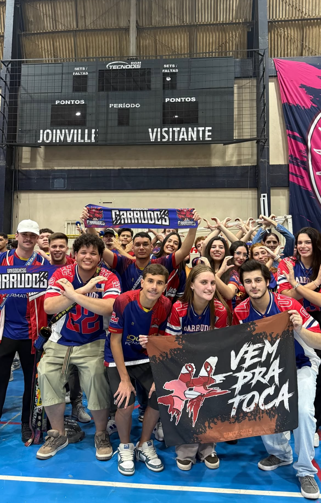
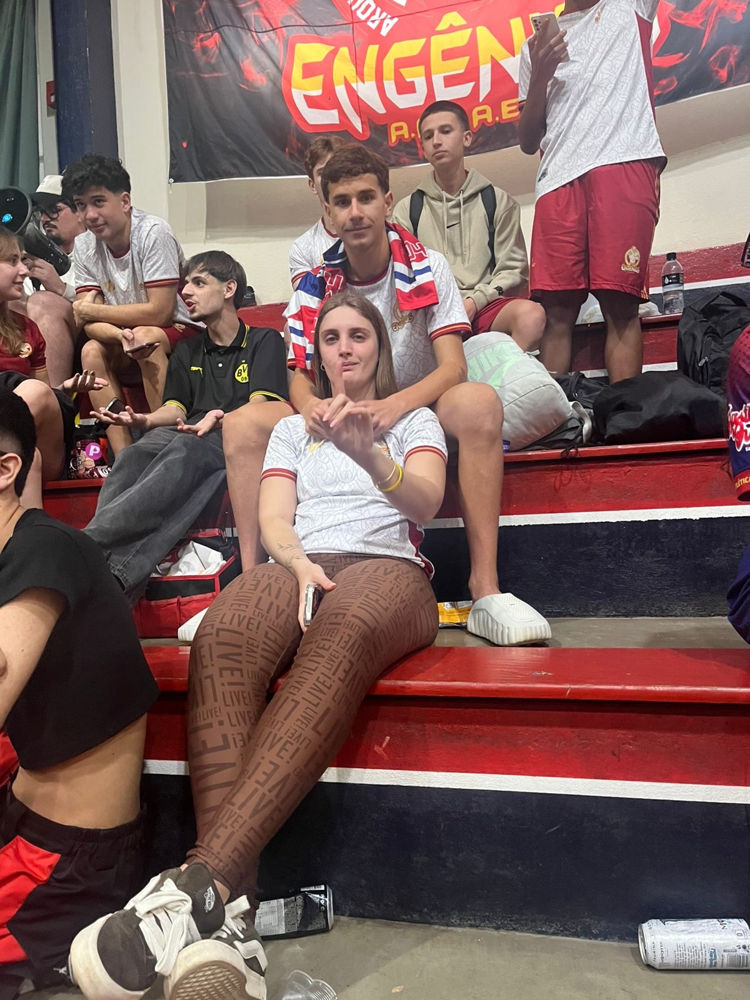

Eu acho engraçado pensar que tudo isso começou de um jeito tão simples. Era a abertura dos Jogos, aquela correria, aquela expectativa, todo mundo querendo participar, torcendo, tentando fazer o seu time ganhar pontos e, no meio disso tudo, tinha uma regra: se o time tivesse mais de 25 pessoas na abertura, ganhava pontos. O meu time conseguiu. O seu não. E, ai ja viu ne, tu falou que eu ia entrar com vocês... mais eu realmente não tava botando fé ksksksk
Porque você poderia simplesmente ter aceitado que o seu time não tinha conseguido os pontos. Poderia ter ficado ali, assistindo tudo acontecer e pronto. Mas você foi atrás do Thomas para tentar resolver. Foi falar com ele para eu poder entrar com você e ajudar. E foi aí que aconteceu uma coisa que, olhando agora, parece até engraçada: eu entrei com você. Eu fui parar ali, junto com você, ajudando o seu time. E talvez naquele momento eu ainda não tivesse percebido, mas acho que você estava, sem querer, me levando cada vez mais para dentro desse universo.
E hoje eu consigo falar com toda certeza: acho que eu já sou Garrudos. E sou Garrudos por MUITO. KKKKKKK. Mas o pior é que eu acho que a culpa é sua. Você conseguiu me colocar nesse meio de um jeito que, quando eu percebi, eu já estava ajudando, participando, me envolvendo, conhecendo as pessoas, vivendo os momentos e criando memórias que nem estavam nos meus planos.
E é isso que eu acho mais bonito em tudo. Porque quando a gente pensa em uma história, normalmente imagina que os grandes momentos são aqueles planejados, aqueles que a gente sabe que vão ser importantes. Mas, na verdade, muitas das melhores lembranças começam em coisas pequenas. Uma conversa que não parecia importante. Um convite que parecia qualquer coisa. Uma brincadeira. Uma ajuda. Uma situação que poderia ter acabado em poucos minutos, mas que, de algum jeito, acabou ficando.
E com a gente foi exatamente assim.
Você me chamou para perto de um universo que era seu, e eu fui. Primeiro talvez só para ajudar. Depois porque eu já estava ali. Depois porque eu gostava de estar ali. E, quando percebi, eu já tinha começado a criar meus próprios momentos dentro daquele lugar. Já não era só o seu time. Já não era só uma coisa que eu estava fazendo porque você pediu. Era um lugar onde eu também tinha começado a deixar um pouquinho de mim.
Até porque não foi só naquele dia.
Ontem mesmo eu estava lá ajudando a arrumar a bandeira que tinha caído. E pode parecer uma coisa completamente pequena para qualquer outra pessoa. Talvez alguém olhe e pense: “ele só ajudou a levantar uma bandeira”. Mas eu gosto justamente dessas pequenas coisas. Porque elas mostram como, aos poucos, eu fui entrando nesse universo sem nem perceber.
Eu fui ficando.
Fui ajudando.
Fui participando.
Fui vivendo.
E, no meio de tudo isso, tinha você.
Talvez você nem tenha noção do quanto uma pessoa pode mudar os caminhos de outra sem perceber. Você não precisou fazer nada grandioso. Não precisou planejar nada. Você simplesmente foi sendo você. E, por causa disso, eu fui conhecendo lugares, pessoas, momentos e situações que provavelmente não fariam parte da minha história se você não tivesse aparecido nela.
E talvez seja isso que eu mais gosto quando penso em nós: você não entrou simplesmente na minha vida. Você foi abrindo portas.
Uma porta levou a outra.
Uma situação levou a outra.
Um convite virou uma memória.
Uma memória virou outra.
E, quando eu percebi, já existia um monte de pequenas histórias que tinham uma coisa em comum: você.
É engraçado porque, se alguém me perguntasse antes de tudo isso se eu algum dia estaria tão envolvido com os Garrudos, provavelmente eu daria risada. Eu não imaginaria que estaria ajudando em abertura de Jogos, entrando junto com você, ajudando com bandeira, participando das coisas e, principalmente, criando lembranças que hoje eu sei que vou lembrar por muito tempo.
Mas agora eu acho que não tem mais volta.
Eu já sou Garrudos.
E acho que você tem uma parcela ENORME de culpa nisso. KKKKKKK.
Mas, sinceramente? Eu não mudaria.
Porque no final das contas, não é sobre ser Garrudos ou qualquer outro time. Não é sobre ganhar pontos na abertura, ganhar uma competição ou conseguir fazer uma bandeira ficar em pé. É sobre as pessoas que estavam ali. É sobre os momentos que aconteceram enquanto todo mundo estava preocupado com coisas que pareciam importantes naquele instante.
E, entre todas essas pessoas, estava você.
E eu estava com você.
Talvez seja por isso que eu gosto tanto dessas lembranças. Porque elas não precisam ser enormes para serem especiais. Às vezes, basta lembrar de onde eu estava, quem estava comigo e o que estava acontecendo para eu sentir aquele mesmo carinho de novo.
Eu gosto de lembrar que você foi atrás de uma solução para conseguir que eu entrasse com você. Gosto de lembrar que eu aceitei. Gosto de lembrar que, no meio daquela abertura, a gente acabou compartilhando mais uma coisa. Gosto de lembrar que depois vieram outros momentos, outras ajudas, outras histórias e outras situações em que eu estava ali, fazendo parte.
E talvez você nunca tenha percebido, mas cada vez que você me chama para perto, eu sinto que estou ganhando mais um pedacinho da sua vida.
E isso significa muito para mim.
Porque eu não quero conhecer só os grandes momentos da sua vida. Eu quero conhecer os pequenos também. Quero estar nas coisas que talvez você nem considere importantes. Quero estar quando a bandeira cair e precisar de alguém para ajudar a levantar. Quero estar quando alguma coisa der errado. Quero estar quando tudo der certo. Quero estar nas risadas, nas comemorações, nas confusões, nos jogos, nos dias tranquilos e até naqueles momentos em que não acontece absolutamente nada.
Porque, para mim, estar com você já transforma o momento em alguma coisa que vale a pena guardar.
E talvez seja por isso que essa história dos Garrudos tenha ficado tão especial para mim.
Porque, no meio de uma abertura de Jogos, entre times, pontos, bandeiras, pessoas e toda aquela bagunça, eu ganhei mais uma lembrança nossa.
Mais uma daquelas histórias que, quando eu lembrar daqui a alguns anos, provavelmente vou sorrir e pensar: “caramba... olha onde tudo isso começou”.
E talvez seja isso que você faz comigo sem perceber.
Você transforma momentos comuns em lembranças que eu quero guardar.
Você me faz participar de coisas que eu nunca imaginei que participaria.
Você me faz querer estar perto até quando o motivo para estar perto parece ser a coisa mais simples do mundo.
E, no final, talvez eu nem esteja ajudando os Garrudos só porque gosto dos Garrudos.
Talvez eu esteja ajudando porque, de alguma forma, os Garrudos viraram mais um lugar onde eu encontro você.
E se for por sua causa que eu virei Garrudos...
então pode colocar meu nome na lista.
Porque eu já aceitei.
Sou Garrudos mesmo.
E, sinceramente, por sua culpa, acho que sou Garrudos até demais. KKKKKKK 🦀❤️
Mas se existe uma coisa que eu espero que você nunca esqueça é que, por trás de todas essas brincadeiras, todos esses jogos e todas essas histórias, existe algo muito maior que eu gosto de guardar: eu amo a forma como a vida foi encontrando pequenas maneiras de colocar você cada vez mais perto de mim.
E essa é só mais uma delas.
Mais um dia.
Mais uma história.
Mais uma memória.
Mais um motivo para eu olhar para você e pensar que, entre tantas coisas que poderiam ter acontecido naquele dia, a melhor delas foi simplesmente ter estado ali com você.

Talvez essa foto pareça, para qualquer outra pessoa, apenas uma lembrança de um dia de futsal. Eu jogando, você assistindo, mais um daqueles momentos que acontecem no meio de tantos outros. Mas para mim, ela guarda uma coisa muito maior. Porque, quando eu olho para essa imagem, eu não vejo apenas uma pessoa na arquibancada ou uma camisa diferente. Eu vejo mais um daqueles pequenos momentos em que a nossa história foi acontecendo sem precisar pedir licença.
E existe uma coisa importante nessa história: nós já nos conhecíamos.
Você já fazia parte da minha vida de alguma forma. Eu já sabia quem você era, já conhecia seu jeito, já tinha minhas lembranças de você. Não era como se naquele dia eu estivesse vendo você pela primeira vez. Mas talvez seja justamente por isso que essa lembrança seja tão especial. Porque mesmo conhecendo você, mesmo já tendo tantas coisas guardadas sobre você dentro de mim, ainda existiam momentos em que você conseguia me surpreender de um jeito completamente novo.
E aí veio aquele dia da abertura dos Jogos.
No meio daquela bagunça toda, dos times, das pessoas, da competição e de tudo que estava acontecendo, eu lembro de ter falado para você:
“Se eu entrar com a Garrudos, tu vai colocar a camisa da Engenios.”
E você colocou.
KKKKKKKK.
Era para ser só uma brincadeira. Uma provocação. Uma daquelas coisas que a gente fala sem imaginar que, depois, vai virar uma memória tão específica que vai ficar marcada na cabeça.
Mas aí você apareceu com aquela camisa.
E eu preciso admitir uma coisa que talvez eu nem devesse falar...
você ficou PERFEITA.
Tipo... perfeita mesmo.
👀
E olha que, particularmente, eu sempre achei você muito bonita. Você sabe disso. Eu já tinha olhado para você de inúmeras formas, em inúmeros momentos, com diferentes roupas, diferentes cabelos, diferentes expressões e diferentes versões suas. Eu já tinha visto seu sorriso, já tinha visto você concentrada, rindo, brincando, cansada, distraída. Já tinha uma imagem sua que eu gostava muito.
Mas aquela camisa...
Eu não sei explicar.
O branco com o dourado simplesmente combinou com você de um jeito absurdo.
Talvez porque fosse diferente.
Talvez porque eu não estivesse acostumado a te ver daquela forma.
Talvez porque, naquele momento, eu já estivesse olhando para você com um carinho diferente.
Ou talvez porque você realmente tenha conseguido ficar bonita de um jeito que até eu tive que parar e pensar: “meu Deus...”
👀
E existe uma ironia muito boa nisso tudo.
Porque eu estava lá jogando futsal.
Você estava ali assistindo.
E, de alguma maneira, enquanto eu estava preocupado com o jogo, com a bola, com o que estava acontecendo dentro da quadra, você acabou sendo uma das coisas que mais ficou na minha memória fora dela.
É engraçado como algumas pessoas conseguem fazer isso.
Elas não precisam fazer nada extraordinário.
Não precisam falar alguma coisa inesquecível.
Não precisam preparar um momento perfeito.
Às vezes, basta simplesmente estarem ali.
E você estava.
Sentada, assistindo.
Com aquela camisa.
E eu estava vivendo mais um daqueles momentos que, na hora, pareciam apenas mais um dia, mas que depois acabam ganhando um lugar especial dentro da nossa história.
Porque hoje, quando eu penso nessa foto, eu não lembro apenas de um jogo de futsal.
Eu lembro de você.
Lembro da camisa.
Lembro da brincadeira.
Lembro de ter falado que, se eu fosse de Garrudos, você teria que ir de Engenios.
E lembro principalmente da sensação de olhar para você e perceber o quanto você ficava linda daquele jeito.
E talvez o mais bonito seja que essa foto representa exatamente uma coisa que eu gosto muito na nossa história: ela não é feita apenas de grandes acontecimentos.
Ela é feita dessas pequenas cenas.
Desses detalhes que talvez ninguém mais perceba.
De uma camisa.
De um jogo.
De uma frase boba.
De uma pessoa na arquibancada.
De um olhar que dura alguns segundos.
De uma lembrança que poderia facilmente ser esquecida, mas que, por algum motivo, eu escolhi guardar.
E eu gosto disso.
Gosto de perceber que, quando penso em nós, não lembro apenas dos momentos que foram planejados. Lembro também dos momentos que simplesmente aconteceram.
Porque talvez seja assim que uma história de verdade seja construída.
Não em um único dia.
Não em um único acontecimento.
Mas em centenas de pequenos momentos que vão se acumulando até que, quando você percebe, existe uma história inteira ali.
E você já estava nessa história antes mesmo de eu perceber o tamanho que ela teria.
Antes de existirem tantas conversas.
Antes de existirem tantas lembranças.
Antes de eu começar a enxergar determinadas coisas em você de uma forma diferente.
Você já estava ali.
E talvez seja por isso que eu gosto tanto de olhar para trás.
Porque consigo encontrar pequenos pedaços da nossa história em lugares que, na época, pareciam completamente comuns.
Essa foto é um deles.
Um jogo de futsal.
Você assistindo.
Eu jogando.
Uma camisa dos Engenios.
E uma frase que começou como brincadeira e terminou virando mais uma memória nossa.
E, entre todas as coisas que poderiam ter ficado daquele dia, foi justamente você usando aquela camisa que ficou na minha cabeça.
Talvez porque naquele momento eu tenha percebido mais uma vez uma coisa que acontece comigo com você:
eu nunca consigo simplesmente olhar para você e achar que é só mais um momento.
Sempre existe alguma coisa.
Algum detalhe.
Alguma sensação.
Alguma lembrança que fica.
Às vezes é o seu sorriso.
Às vezes é o jeito que você olha.
Às vezes é alguma coisa completamente idiota que você fala.
E, naquele dia, foi uma camisa branca e dourada.
Mas, no fundo, nunca foi realmente sobre a camisa.
Era sobre você.
Era sobre a forma como você consegue transformar uma lembrança simples em alguma coisa que eu quero guardar.
Era sobre como, mesmo em meio a um jogo, uma competição e toda a movimentação ao redor, eu conseguia encontrar um motivo para olhar para o lado e sorrir.
E talvez seja isso que eu mais gosto em nós.
Eu não preciso que aconteça alguma coisa gigantesca para sentir que um momento valeu a pena.
Às vezes, tudo que precisa acontecer é você estar lá.
Porque quando você está, até as coisas mais simples ganham outro significado.
Um jogo deixa de ser apenas um jogo.
Uma arquibancada deixa de ser apenas uma arquibancada.
Uma camisa deixa de ser apenas uma camisa.
Uma brincadeira deixa de ser apenas uma brincadeira.
E uma foto deixa de ser apenas uma foto.
Ela vira uma lembrança de nós.
De uma fase da nossa história.
De uma versão nossa que talvez nem imaginasse quantas outras lembranças ainda viriam depois.
E eu espero que a gente continue tendo muitas dessas.
Muitas fotos que hoje parecem simples e que, daqui a alguns anos, vão carregar histórias inteiras.
Muitos jogos em que você vai estar me assistindo.
Muitas provocações.
Muitas brincadeiras.
Muitas vezes em que eu vou falar alguma coisa só para ver você fazendo exatamente o que eu pedi.
E muitas outras vezes em que eu vou olhar para você e pensar a mesma coisa que pensei naquele dia:
“Meu Deus... ela ficou linda assim.”
👀
Mas, acima de tudo, eu espero que continuem existindo esses pequenos momentos em que a vida simplesmente coloca nós dois no mesmo lugar.
Porque foram eles que construíram tanta coisa até aqui.
Você não precisou aparecer na minha vida de uma forma cinematográfica.
Não precisou existir um grande acontecimento anunciando que alguma coisa começaria.
Você simplesmente foi ficando.
E eu fui ficando também.
E, pouco a pouco, aquilo que parecia pequeno foi ficando grande.
Até chegar no ponto em que eu olho para uma simples foto sua usando uma camisa de um time e consigo enxergar muito mais do que uma imagem.
Eu enxergo uma parte da nossa história.
Enxergo uma lembrança que é só nossa.
Enxergo você.
E, principalmente, enxergo o quanto eu sou feliz por ter vivido esse momento com você.
Então sim...
Eu posso admitir.
Você cumpriu sua parte do trato.
Eu entrei com a Garrudos.
Você colocou a camisa dos Engenios.
E acabou ficando bonita pra caralho nela.
KKKKKKKKKK.
Mas, brincadeiras à parte, acho que essa foto representa uma coisa muito maior para mim.
Representa mais uma prova de que, quando eu olho para trás, encontro você em cada vez mais lugares.
E eu espero que continue assim.
Que ainda existam muitos jogos.
Muitas arquibancadas.
Muitas camisas.
Muitas brincadeiras.
Muitas fotos.
Muitos momentos inesperados.
E, principalmente, muito mais história para nós dois construirmos.
Porque se uma simples frase — “se eu entrar com a Garrudos, tu vai colocar a camisa da Engenios” — conseguiu virar uma lembrança que eu guardo desse jeito...
eu fico imaginando quantas outras pequenas coisas ainda vão acontecer entre nós.
E, sinceramente?
Eu quero viver todas.
Com você.
Do meu lado.
Na arquibancada.
Na quadra.
Nos dias bons.
Nos dias bagunçados.
Nas brincadeiras.
Nas pequenas coisas.
Em tudo aquilo que ainda nem aconteceu, mas que um dia vai virar mais uma lembrança nossa.
Porque, no final, é isso que você se tornou para mim:
não apenas alguém que aparece nas minhas fotos, mas alguém que aparece cada vez mais na minha história.
E essa, para mim, é uma das coisas mais bonitas que poderiam ter acontecido.
Eu amo você. ❤️
